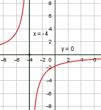

Aufgabe 105 7 f(x) = ------- x ≠ -4 -x – 4 Quotientenregel erste Ableitung: u = 7, u' = 0 v = -x - 4, v' = -1 0 * (-x -4) - (-1) * 7 f'(x) = ------------------------- (-x -4)2 7 f'(x) = ----------------- x2 + 8x + 16 Quotientenregel zweite Ableitung: u = 7, u' = 0 v = x2 + 8x + 16, v' = 2x + 8 = 2 * (x + 4) 0 * (-x -4)2 - 2 * (x + 4) * 7 f''(x) = ---------------------------------- (x + 4)4> -14 f''(x) = ---------- (x + 4)3 Bedingung für die Existenz eines Wendepunktes f''(x) = 0, f'''(x) ≠ 0. u Wenn f''(x) = ----, dann ist v u' * v + v' * u f'''(x) = ------------------ v2 f''(x) = 0, wenn der Zähler u = 0 und der Nenner v ≠ 0. Eingesetzt in u' * v + v' * u u' --> f'''(x) = ----------------- = ----- v2 v damit kann man feststellen, für welche x f'''(x) ≠ 0 ist. Polstellen, Nenner = 0: -x – 4 = 0 |+x x = -4 Nenner = 0 und Zähler ≠ 0 --> senkrechte Asymptote Definitionsbereich: -∞ < x < ∞, x ≠ -4 Waagerechte Asymptote: 7 f(x) = -------- = 0 für x --> ± ∞ -x - 4 Wertebereich: -∞ < f(x) < ∞, f(x) ≠ 0 Symmetrie zur y-Achse bzw. zum Punkt (0|0): 7 7 f(-x) = ----------- = ------- -(-x) - 4 x - 4 7 7 -f(-x) = - ------- = -------- x – 4 -x + 4 f(x) ≠ f(-x) keine Achsensymmetrie f(x) ≠ -f(-x) keine Punktsymmetrie Nullstellen: f(x) = 0 7 f(x) = -------- = 0 |*(-x - 4) -x - 4 7 = 0 Widerspruch --> keine Nullstellen Schnittpunkt mit der y-Achse: x = 0 7 f(0) = ------ = -1,75 -4 Sy(0|-1,75) Extrempunkte: 7 f′(x) = -------------- = 0 |*(x2 + 8x + 16) x2 + 8x + 16 7 = 0 Widerspruch --> keine Extrempunkte Wendepunkte: -14 f''(x) = ---------- = 0 |*(x + 4)3 (x + 4)3 -14 = 0 Widerspruch --> keine Wendepunkte Graph:
